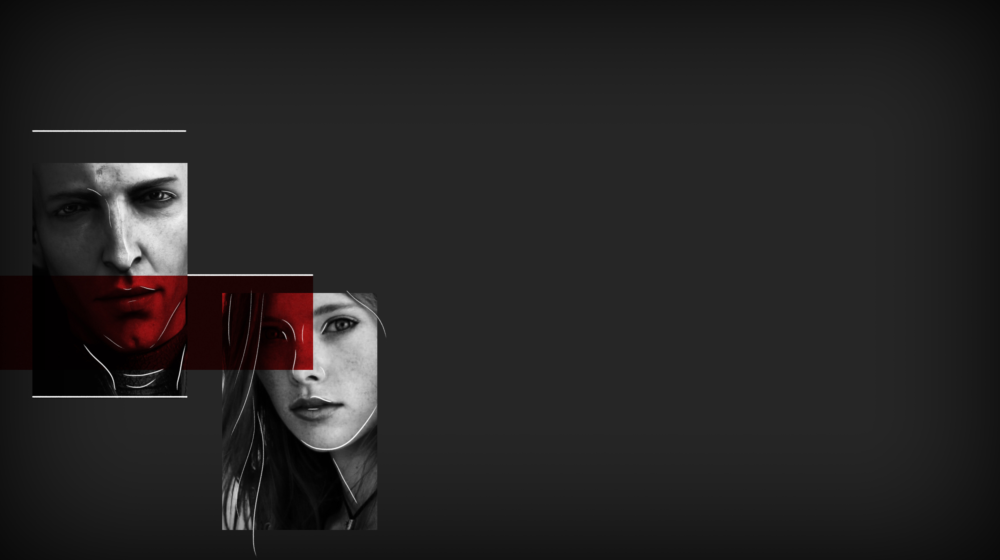

SPLITTED
SPLITTED

«Don't what?» I ask him, trying to get a reaction from him.
«Mess...»
Don't mess, but with who? It seems like my strategy is working. I try convincing him to go on, but he is not looking at me, although his eyes are peircing mine.
«She... will... find you.»
«Who? Who is gonna find me?»
I receive a long silence, but after all the waiting, Aibak coughs violently. When he looks at me again, his eyes are back to their watered down blue. And I know I lost it.